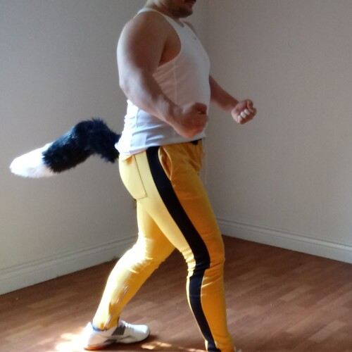

Uh Oh
Uh Oh
I've been sitting here for half an hour,
trying to conjure up my poetic power.
But nothing seems to be coming out,
I think I am going through a poetic drought.
I guess this happens every once in a while,
so it is not a reason not to smile.
But I thought I was already better than that,
I felt like the world's most poetic cat.
Now I struggle to come up with the next line,
though I promise not to whine.
Maybe, there is way to break through by block,
perhaps I should stop staring at the clock.
Oh yes, this worked, I feel much better meow!
I remembered every word, wow!
Wig, pig, pear, bear, sled, bed, boat, goat,
top, mop, wall, ball, duck, truck, mouse house, and blouse.
And what a story that would rhyme,
had I not ran out of time.
